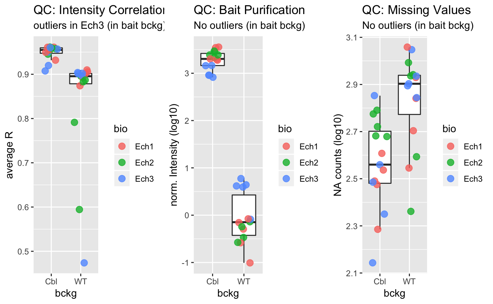

The input file can be of many types as long as it can be converted to a data.frame containing a number of columns with protein intensities and one column with protein identifiers. A protein identifier correspond to a unique entry in the UniProt database. Multiple protein identifiers can be associated with a single protein group.
By default InteRact() performs several preprocessing steps using the function preprocess_data(). Data preprocessing consists of:
condition$columns (see Metadata)filter_time, filter_bio or filter_tech
Column_score) or with no gene name associated (in column Column_gene_name)preprocessed_data <- preprocess_data(proteinGroups_Cbl,
Column_gene_name = "Gene.names",
Column_score = "Score",
Column_ID = "Protein.IDs",
Column_Npep = NULL,
Column_intensity_pattern = "^Intensity.",
bait_gene_name = "Cbl",
condition = NULL,
bckg_bait = "Cbl",
bckg_ctrl = "WT")## Contaminant proteins discarded
## Proteins with no gene name available discarded
## Number of theoretically observable peptides unavailable : used MW instead
## Merge protein groups associated to the same gene name (sum of intensities)
## Rescale median intensity across conditionsNote that if the data.frame condition is not specified, conditions will be mapped to intensity columns automatically using identify_conditions() (see Metadata).
Following preprocessing, data quality can be as assessed using several functions. You can assess the distribution of missing values, the correlations in protein intensities between samples, the quality of affinity purification using plot_QC():
library(gridExtra)
grobs <- plot_QC(preprocessed_data)$plot
grid.arrange(grobs = grobs, nrow = 1)